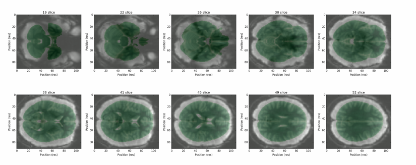
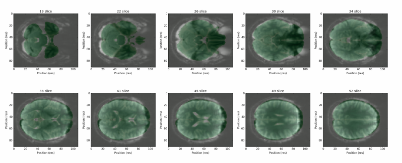

Design Team 0 Slides
Eric Bridgeford, Albert Lee, Eric Walker
F2G pipeline leg overview
Eric Bridgeford
Week's Accomplishments
- Had a dope vacation
- read some papers
- Ran FNGS on lots of data and made adjustments (NKI)
- discriminability results for dataset
- Made plan for upcoming week
- started data for Da (1800 scans at 1mm res)
- Added qc for downsampling
Registration Issues
- Noticed that registration worked well for some subjects and poorly for others
- Noticed that entire datasets could be impacted by poor registration (NKI)
- No online support :(
Initial Attempts
- tried to copy other peoples' registration methods
- found that most failed in some way that made them poorly generalizable to other datasets
- tried nonlinear registration (FNIRT) which performed poorly (more on this later)
Registration Solution
- Looked at differences between KKI scans and NKI scans
- See that skull was the critical difference (very visible on KKI, not very on NKI)
- Tried different combinations of skull stripping, and settled on...
- align be'd s0 to be'd mprage, be'd mprage to template brain, then skull-on fmri stack to template
Why this works
- Our registration is "optimized" for the brain tissues
- Doesn't get confused by skulls, which can look poor on fMRI
- Limitations: skullstripping isn't the most robust procedure
Example that failed previously

...And after correction

Goals for Week
- Finish running Da's stuff
- Figure out FNIRT
- Add spatial smoothing module and see how it impacts mnr
- Add code for increasing interchangeability of atlases/templates/etc and run on more labelled atlases